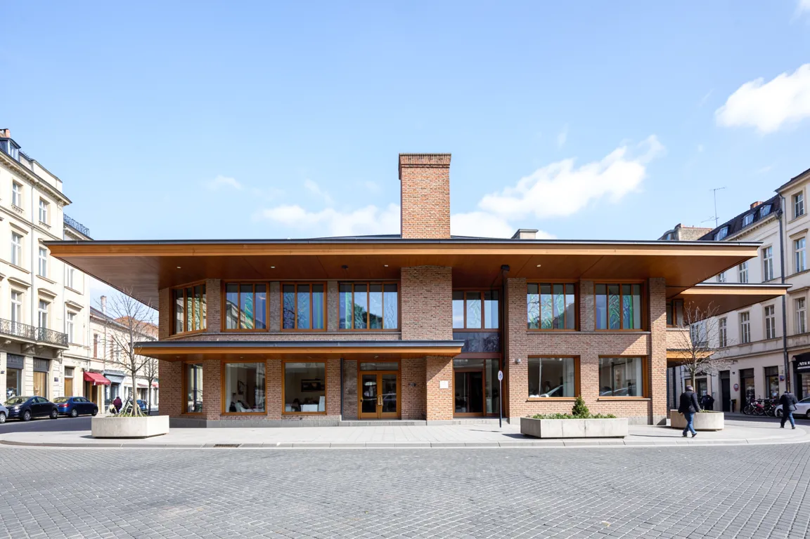

архитектура · 1900–1917 · также: Стиль прерий, Стиль Райта, Чикагская прерия
Длинные низкие дома с широкими нависающими крышами, ленточными окнами и центральным очагом. Фрэнк Ллойд Райт и чикагские архитекторы строили для плоского Среднего Запада: правит горизонтальная линия, а комнаты перетекают друг в друга.

Главная идея
Дом должен принадлежать своей земле: низкие горизонтальные линии, свободный план вокруг очага и честные материалы создают американскую архитектуру прерий.
Принципы дизайна
Подчёркивайте горизонталь: низкие вальмовые крыши с уклоном 1:6–1:4, свесы 1–2,5 м и длинные непрерывные линии подоконника и пояса.
Планируйте вокруг центрального каменного очага и пусть жилые комнаты перетекают друг в друга в крестообразном или Г-образном плане.
Группируйте окна лентами створок с геометрией витражного стекла на высоте 0,8–1,2 м от пола, чтобы комнаты казались защищёнными.
Делайте вход низким и непрямым, высотой 2,0–2,2 м, чтобы сжать посетителя перед открытой гостиной высотой 3–3,5 м.
Берите длинный тонкий римский кирпич с глубокими выбранными горизонтальными швами и заподлицо вертикальными, чтобы подчеркнуть горизонтальную линию.
Проектируйте весь дом как одно произведение: встроенная мебель, лампы, стекло и кашпо следуют одному геометрическому мотиву.
Антипаттерны
Высокие вертикальные пропорции и крутые скатные крыши